Toronto & the GTA · Licensed · Family-owned
A licensed plumber at your door today.
- 4.9 ★462 Google reviews
- 60–90 minemergency response
- Fixed pricebefore we start
- 12 monthswarranty on our work
What's going on?
Pick the closest one and we'll tell you what happens next. See the service
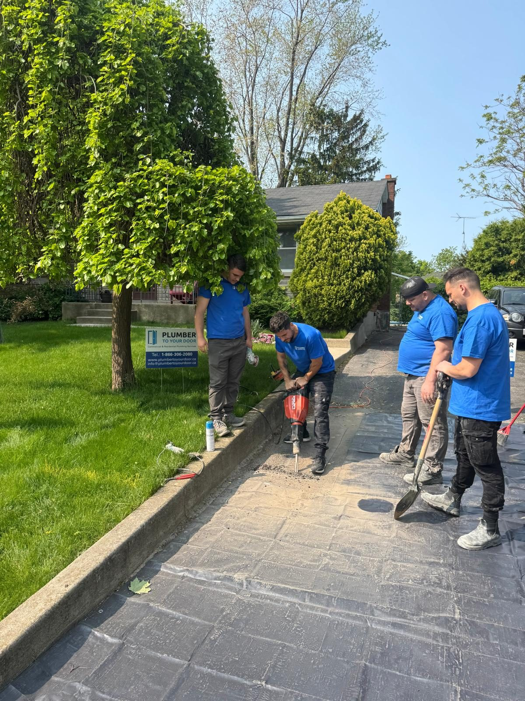
- 4.9 / 5462 Google reviews
- Best of the BestHomeStars winner 2025
- Licence 1000022109Licensed, insured & bonded
- Since 2021Family-owned, 15+ years in the trade
- 12-monthparts & workmanship warranty
What we fix
Start with the problem, not the pipe.
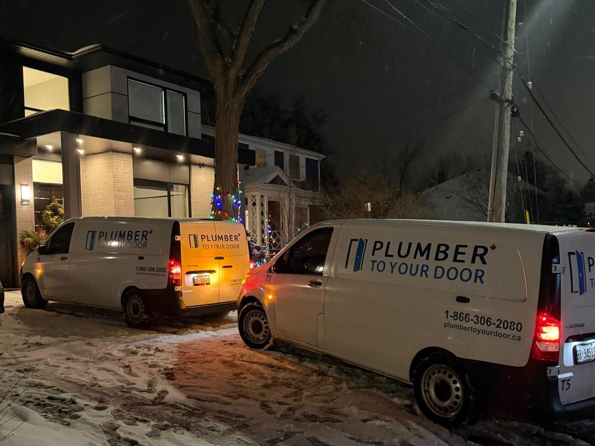
Emergency plumbing, 24/7
Burst pipe, overflowing drain, no water. The line is open all night and the price is the same as it is at noon.
See what we fix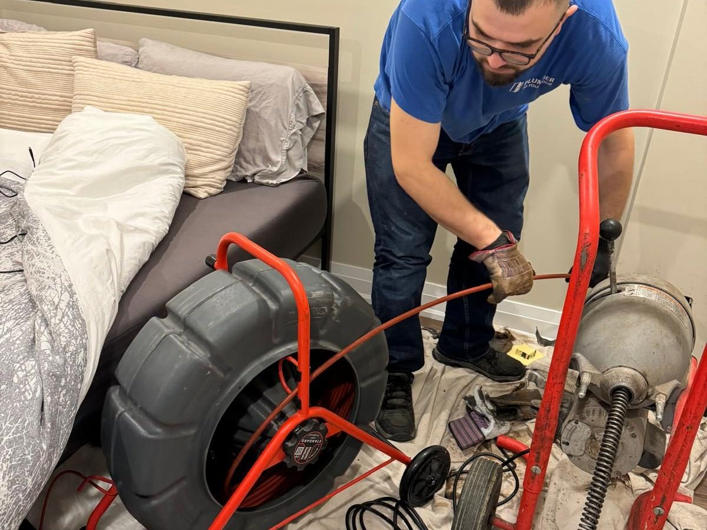
Drain cleaning & clogged drains
Kitchen sinks, showers, floor drains and the main line. Cable snake, hydro jetting and a camera to prove it's clear.
See what we fix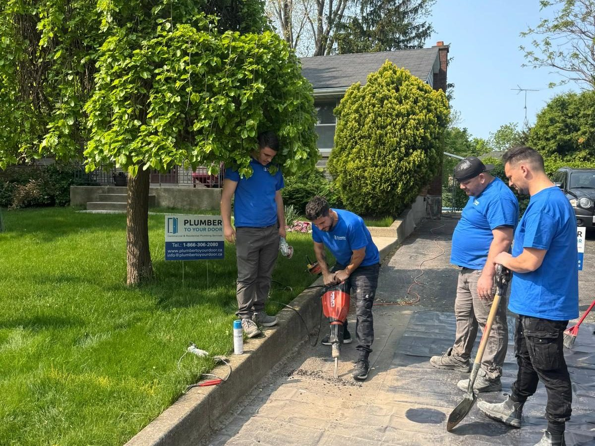
Main water line & sewer line replacement
Low pressure, rusty water, repeated backups. We dig, replace, pass the City inspection and put the yard back.
See what we fix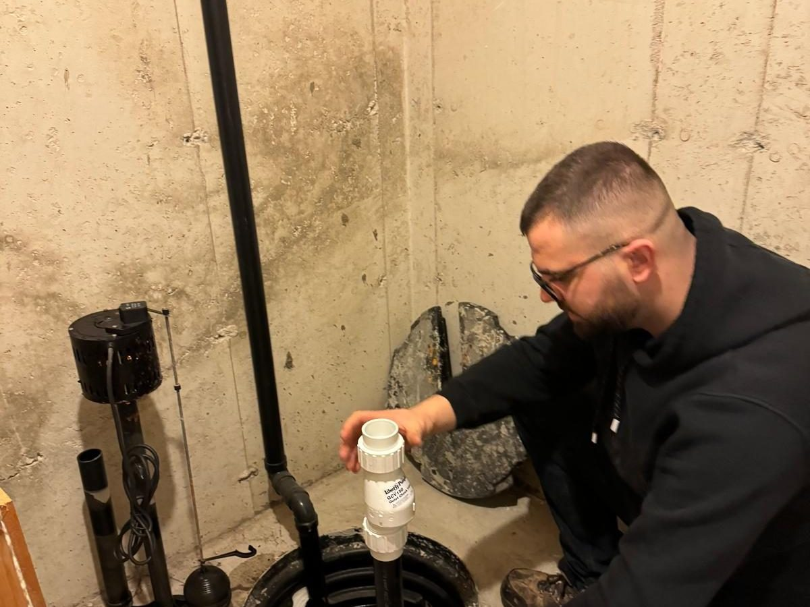
Sump pumps, backwater valves & flood clean-up
Sump pump with battery backup, backwater valve, and the clean-up and drying when the water has already come in.
See what we fix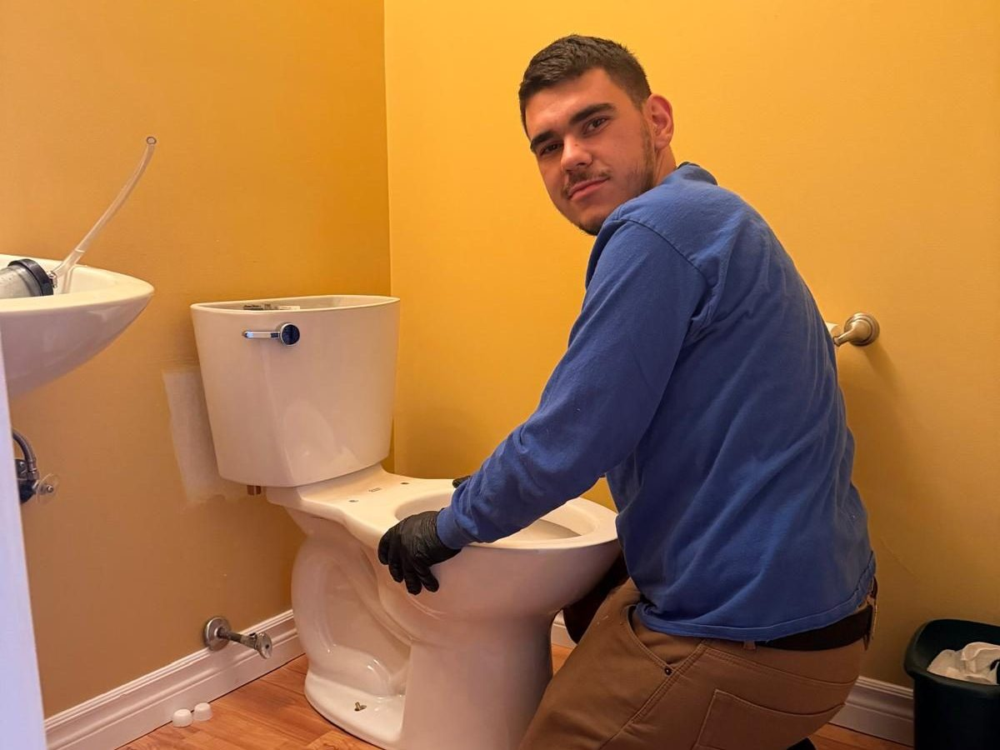
Toilets, faucets, sinks, showers & tubs
Running toilets, leaking bases, dripping faucets, new sinks and showers. Most jobs done in one visit.
See what we fix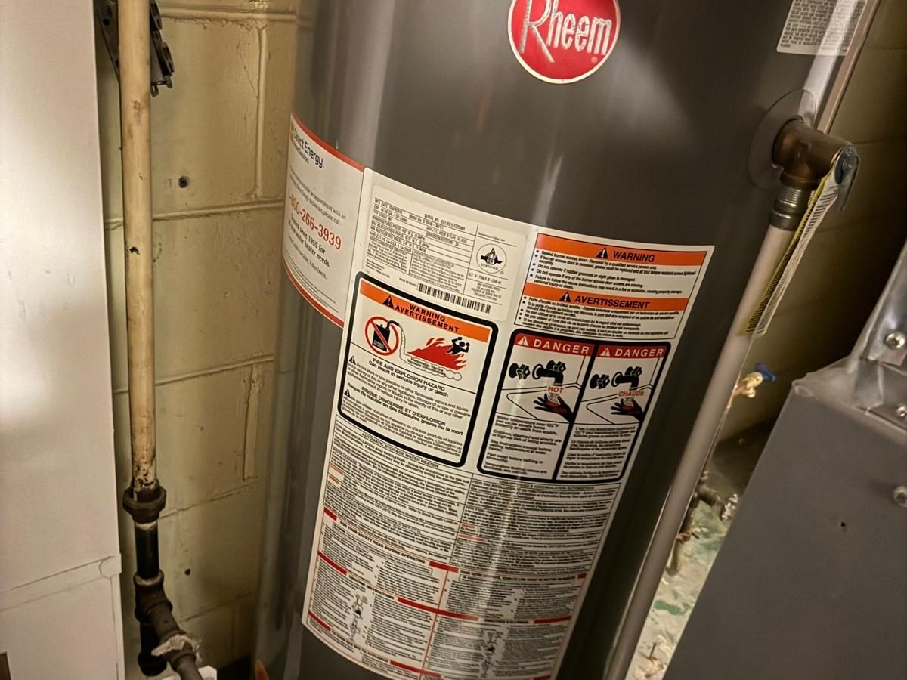
Hot water tanks & water filters
No hot water, a puddle under the tank, rusty water. Repair if it's a valve, replace the same day if it's the tank.
See what we fixEmergency line · 24/7
Water where it shouldn't be?
Call and you'll usually get George. He'll tell you what to shut off, and a van is on its way: 60 to 90 minutes in most of Toronto, any hour, at the same fixed price as daytime.
- Burst or frozen pipe
- Sewer backing up
- Overflowing toilet or drain
- Flooded basement
- Leaking water heater
- No water at all
Pricing & how it works
You know the price before we start.
Assessment visit
A licensed plumber comes to your door, finds the problem and gives you a fixed price for the fix. Go ahead with the work and the $95 comes off the bill.
Fixed price, by the job
No hourly rate, no clock running while someone looks for a part. The number you approve is the number on the invoice.
Same price, any hour
Nights, weekends and holidays cost the same as a Tuesday morning. Emergency means we come faster, not that we charge more.
12-month warranty
Parts and workmanship on every repair and installation, and 5 years on main water line replacements. If it fails, we come back and fix it at no charge.
We take Visa, Mastercard, e-transfer and cash. Cheques for installations and renovations.
Recent work
Jobs with an address, not stock photos.
Old line out, new copper in, City inspection passed and the lawn put back, one day.
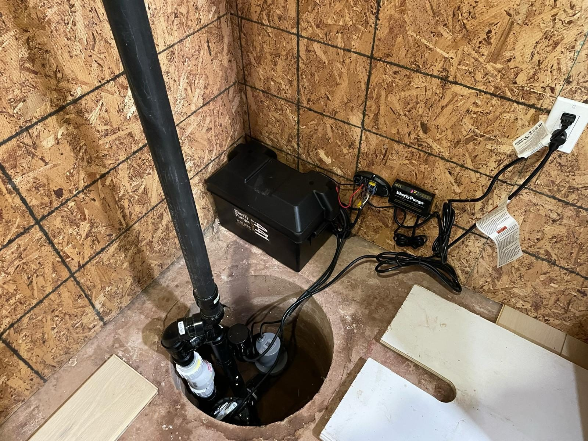
Primary pump plus a battery backup so the basement stays dry when a storm takes the power out.
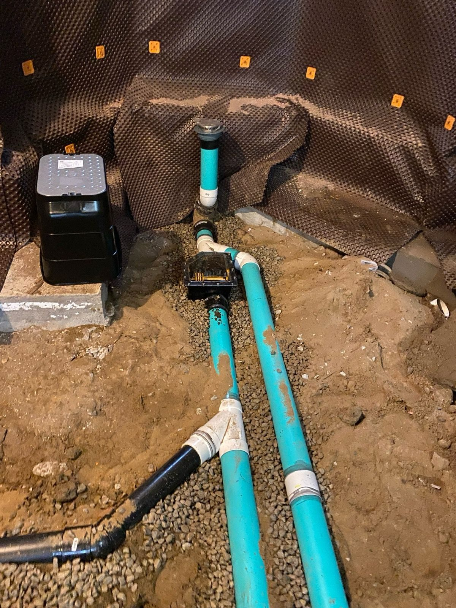
Mainline backwater valve set in the floor, tested, and documented for the City subsidy.
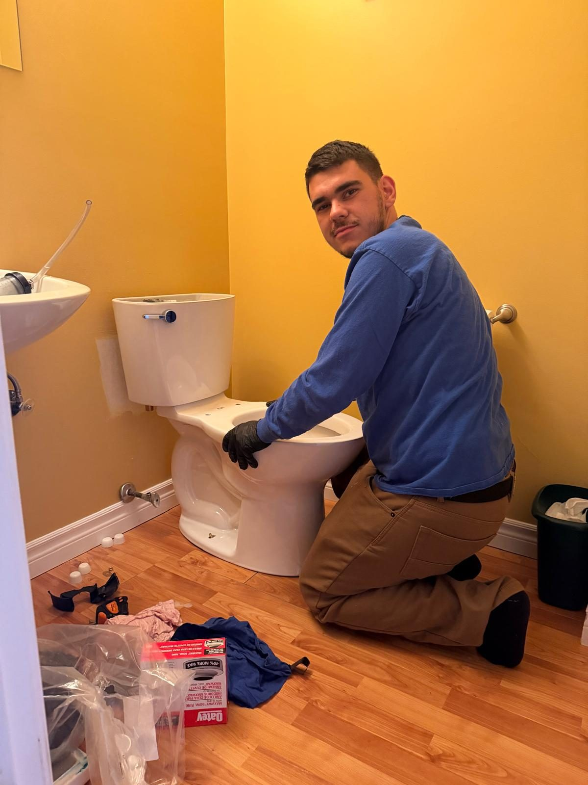
Recurring clogs solved with a new American Standard Cadet PRO, installed the day of the call.
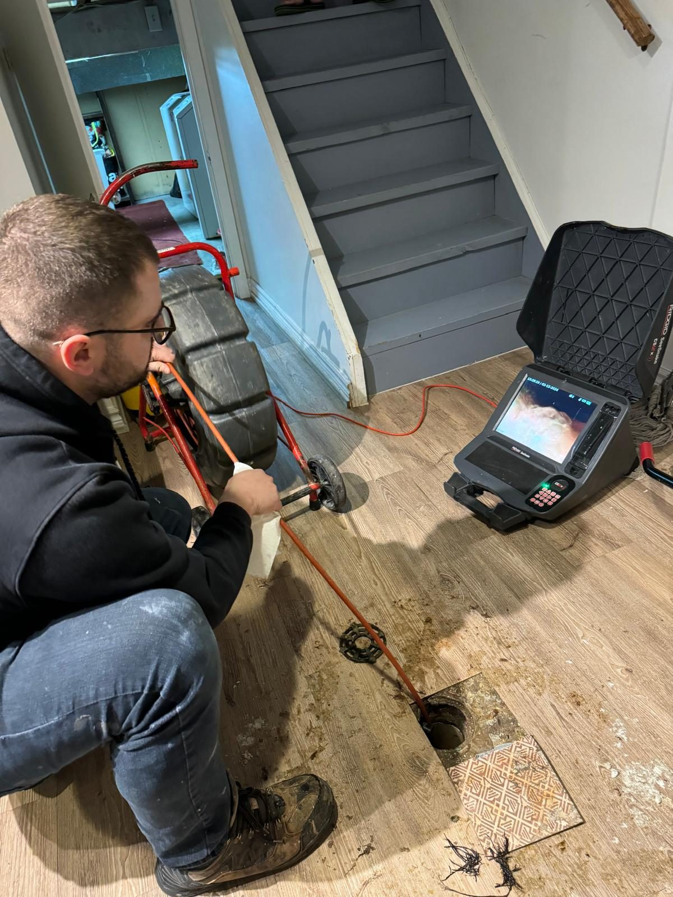
A lost ring, found in the line with the camera and recovered before it reached the sewer.
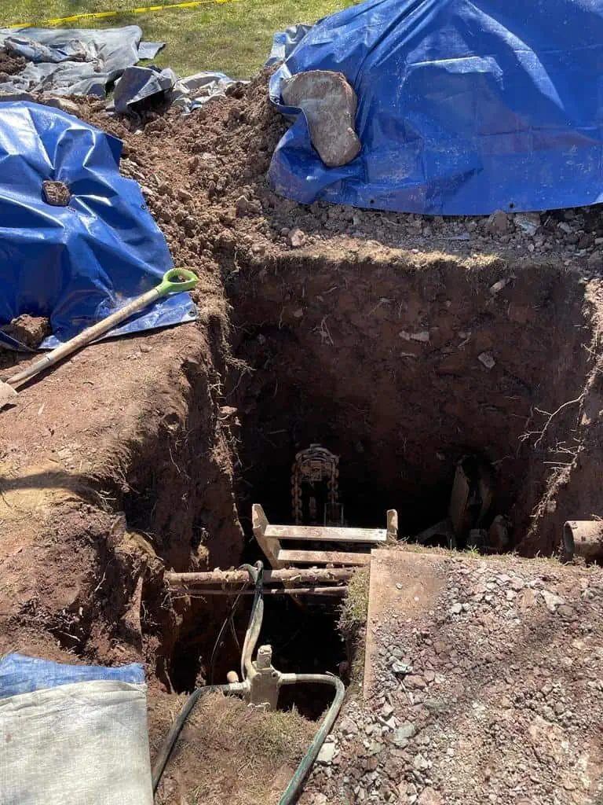
Six-inch clay main replaced from the house to the street after years of backups.
Google reviews
4.9 out of 5, from 462 people who called.
George showed up right away and immediately took care of the job. I was charged the exact price he mentioned on the phone, and he tried fixing a sink problem without me asking. He cleaned up after he was done.
They were very responsive, arrived on time, inspected the issue and provided us with a fair and reasonable quote. Within an hour our leak under the kitchen sink was fixed and the entire piping was replaced.
We were expecting a storm and I realized our sump pump wasn't kicking in. David came right away, replaced the old pump and tested the new one multiple times before leaving.
Woke up to the sound of dripping and found the toilet was leaking at the base. They sent Chris within an hour. He replaced the wax ring and tightened everything.
George and Matteo had a long day after fixing a commercial basement flooding. They showed up with tools around 7 pm and started working right away. I was completely shocked by their professionalism.
They helped me in an emergency and were at my door within the hour. Very trustworthy and professional.
Who's at the door
A family company. The name on the van is the person who shows up.
Plumber To Your Door was started in 2021 by George, a licensed plumber with 15+ years in the trade. He still answers the phone and still takes the emergency calls. The crew are plumbers he trained or worked with, not subcontractors.
More about us- GeorgeFounder & licensed plumberAnswers the phone himself. Named in 39 of the last 90 Google reviews.
- EmilPlumberWater heaters, drains and short-notice calls.
- ChrisPlumberToilets, fixtures and the quiet fix for banging pipes.
- DavidPlumberSump pumps and water heaters, usually the same day.
- MatteoPlumberLeaks, bathroom renovation plumbing and the long days.
- AndyPlumberDrains and the noises in the walls nobody else finds.
Service area
Based on Bloor West. Serving the whole GTA.
Toronto: The Annex, Downtown & Financial District, Kensington Market, Forest Hill, Cedarvale, Yorkdale & Lawrence Heights, Downsview, Caledonia & Fairbank, North Park & Maple Leaf, Silverthorn, Beechborough, Nortown & Caribou Park and everywhere in between.
West
Etobicoke, Mississauga, Oakville, Burlington, Milton, Georgetown
North
North York, Thornhill, Richmond Hill, Woodbridge, Aurora, Caledon
East
Scarborough, Pickering
Farther out
Hamilton, Guelph, Kitchener, Cambridge, St. Catharines
FAQ
Questions people ask us
Do you charge by the hour?
No. We price by the job. You get a fixed price before we start, and that's the number on the invoice.
Is the estimate free?
There's a $95 assessment fee for a plumber to come out, diagnose the problem and give you a fixed price. If you go ahead with the work, the $95 comes off the bill.
How fast can you come?
Emergencies: 60 to 90 minutes in most of Toronto, any hour. Everything else is usually the same or next day.
Are you licensed and insured?
Yes. Ontario plumbing licence 1000022109, fully insured and bonded. We carry the certificates condo boards and property managers ask for.
What's the warranty?
12 months on parts and workmanship for repairs and installations, and 5 years on main water line replacements. Drain cleaning is maintenance and isn't warrantied.
How can I pay?
Visa, Mastercard, e-transfer or cash. Cheques for new installations and renovations only.